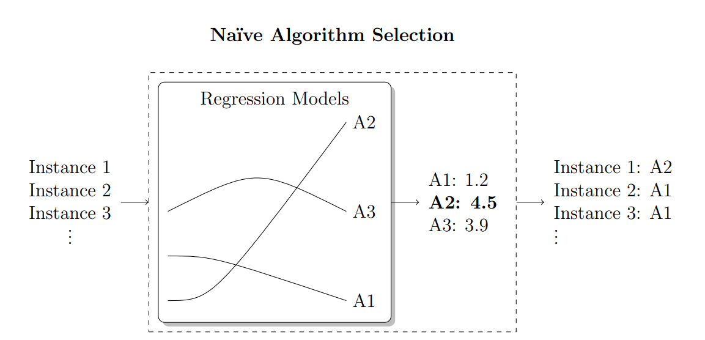

3 Background
Combinatorial problems involve problems whose goal is to find the best arrangement or selection from a finite set of items. These problems mainly focus on assignment, sorting, selection, and optimization tasks such as scheduling and routing. These challenges are common in multiple disciplines, such as computer science, operations research, bioinformatics, and artificial intelligence (Biere et al. 2021). Many combinatorial problems fall into the categories of NP-complete or NP-hard, meaning they can be significantly computationally expensive.
Common examples of these problems include boolean satisfiability (SAT), integer programming (IP), quantified boolean formulas (QBF), constraint satisfaction problem (CSP), and any other NP-complete problems like the 21 Karp NP-complete problems (Karp 1972). Additionally, NP-hard problems such as the traveling salesman (TSP), answer set programming (ASP), scheduling, and mixed-integer programming (MIP) fall into this category. Over several decades, various algorithms and complex mathematical methods have been developed to solve these problems, which mainly deal with discrete optimization.
Every year, competitions are held to compare the proposed algorithms. For example, the SAT community organized annual SAT competitions to evaluate and benchmark algorithms on various tracks and domains (Tomáš Balyo, Heule, and Järvisalo 2017). Similarly, annual QBF solver evaluations (QBFEVAL), MiniZinc Challenge, ASP Competition, and International Planning Competition exist, focusing on quantified Boolean formulas, constraint programming, ASP and planning solvers, respectively (Pulina and Seidl 2019; Stuckey et al. 2014; GEBSER, MARATEA, and RICCA 2019; Taitler et al. 2024).
Many solvers have been proposed and continue to evolve, leading to significant improvements in both efficiency and effectiveness. In addition to exact solvers (Woeginger 2002), researchers have also explored approximation algorithms (Williamson and Shmoys 2011) and heuristics (Pearl 1984) as alternatives to achieve solutions close to the optimum, particularly in cases where exact solutions are computationally infeasible. These methods often leverage problem-specific knowledge to guide the search process, and they often sacrifice optimality for speed and produce suboptimal solutions.
Moreover, the inherent difficulty of these problems means that no polynomial-time solutions are known, and there is no one-size-fits-all solution to solve them. The "No Free Lunch" theorem formalizes the idea that, when considering every possible problem, no algorithm outperforms others on average; they all have equivalent performance (Wolpert and Macready 1997). It is the problem-specific performance that makes some algorithms appear to be better suited for certain domains (Wolpert and Macready 1997). The performance of any algorithm is limited by the specific characteristics of the problem instance it encounters. The results of (Nudelman et al., n.d.) contribute to a deeper understanding of the relationship between the characteristics of the instance (that is, the number of clauses and variables in the SAT), which is known to correlate with the difficulty of the problem.
In the realm of algorithm development, both sequential and parallel solvers have been extensively studied. Theoretically, many problem-solving approaches were originally sequential. For instance, in the SAT domain, Davis-Putnam-Loveland-Logemann (DPLL) algorithm (M. Davis, Logemann, and Loveland 1962) was initially designed to be sequential. Sequential solvers generally operate without awareness of available resources and do not dynamically adapt to them. The results of (Hölldobler, Manthey, and Saptawijaya 2010) have revealed that the performance and efficiency of a sequential solver depend heavily on hardware resources and low-level processing. This underscores the need to utilize parallel resources in problem-solving to improve the performance.
3.1 Parallel Solvers
Parallel solvers then emerged as multicore architectures became increasingly accessible. Initially, the first parallel SAT solvers utilized single-core CPUs, with multiple units communicating over a network and employing the leader-follower model (Hölldobler et al. 2011). This approach is showcased by PMSat, a parallel version of the sequential MiniSAT solver (Gil, Flores, and Silveira 2009), as well as the PSATO solvers (ZHANG, BONACINA, and HSIANG 1996) and PaSAT (Sinz, Blochinger, and Küchlin 2001), which introduced search-space partitioning between processing units communicating over MPI in distributed systems (Hyvärinen, Junttila, and Niemelä 2010). Additionally, advancements in algorithm design made the development of parallel solvers possible. For example, in the SAT domain, the transition from DPLL solvers to Conflict-Driven Clause Learning (CDCL) solvers (Biere et al. 2009), divide-and-conquer techniques (Le Frioux 2019), and the implementation of restart strategies (Hyvärinen, Junttila, and Niemelä 2008) facilitated the parallelization of existing algorithm designs. These design let the solvers share the learned clauses or split search spaces between processing units.
Following the emergence of shared memory architectures, parallel solvers started to exploit multicore CPUs with shared memory among cores (Singer and Vagner 2006). Modern parallel solvers inherited the methods developed from earlier distributed parallelization approaches. For example, the parallel SAT solver, Plingeling (Biere 2012), inherits its algorithm design from the sequential Lingeling solver and incorporates a clause-sharing technique among cores for SAT solving. However, in earlier versions of Plingeling, despite using shared-memory systems, clauses were copied by each core. As noted in (Biere 2013; Aigner et al. 2013), the memory used by each processing unit was physically separated, leading to an n-fold increase in memory usage.
Other solvers, such as the one proposed in (Hyvarinen and Wintersteiger 2012; Manthey 2011), used a more finer granularity in their parallelization approach where multiple cores exchange clauses to solve the problem; however, these methods were not scalable to a high number of cores and resulted in limited improvement. With regard to modern graphical processing unit (GPU) and field-programmable gate array (FPGA) computing, several solutions have been proposed (Redekopp and Dandalis 2000; Zhong et al. 1998; J. D. Davis et al. 2008; Gulati et al. 2009; Osama, Wijs, and Biere 2023, 2021; Collevati, Dovier, and Formisano 2022; Meyer et al. 2010). However, some have not demonstrated promising results and while some show potential, discussions of these solvers are outside the focus of this thesis.
Despite all the developments in parallel computing and parallel algorithm designs, the transition from sequential to parallel solvers remains highly challenging, if not impossible, in some cases. Most solvers are originally designed for sequential execution; therefore, adapting them to parallel environments often requires a thorough understanding of the problem domain, algorithm design, and many core systems.
A number of works have shown that this problem can be overcome by improving performance without directly developing new solvers. Instead, existing solvers can be used and combined in a portfolio, selecting the appropriate solver(s) (Kotthoff 2014; Xu et al. 2008; Kadıoglu, Malitsky, and Sellmann, n.d.). In cases where multiple solvers are chosen, they can be run in a schedule, in parallel, or in combination with each other to achieve superior performance.

3.2 Algorithm Selection
Algorithm selection is a meta-algorithmic technique that was first introduced by John Rice (Rice 1976) in 1976. The algorithm selection problem is strategically choosing the most suitable algorithm from a set of candidates to solve a specific problem instance using the features and characteristics of the problem instances. This problem is closely related to general optimization theory, as both involve finding the best solution among a set of options (Rice 1976). Algorithm selection is an important task in optimizing the performance of computationally expensive tasks, particularly those that can be translated into combinatorial problems (Kotthoff 2014), NP-complete and NP-hard problems (Musliu and Schwengerer 2013; Sitaru and Raschip 2022).
During the last two decades, the algorithm selection problem has attracted significant attention from both researchers and practitioners as it is relevant in various domains, including high-performance computing (Ciorba et al. 2023), sorting (Somshubra Majumdar 2016), probabilistic inference (Guo and Hsu 2003; Kocamaz 2013), software validation (Richter et al. 2020), software verification (Wang et al. 2021; Leeson and Dwyer 2024), software package dependency management (Nichols et al. 2023) and data mining (Ewald, Uhrmacher, and Saha 2010; Batista dos Santos and Merschmann 2020). Algorithm selection is also applicable in the fields of meta-learning and automated machine learning (AutoML), where the goal is to build a meta-model that recommends the best machine learning algorithm, configurations and hyper-parameters for a given training task (Brazdil et al. 2022; Vanschoren 2019; Hutter, Kotthoff, and Vanschoren 2019). In algorithm selection problem, the search space is a discrete set of algorithms, while in problems such as the hyperparameter optimization (HPO) and the combination algorithm selection and hyperparameter optimization (CASH) problem (Thornton et al. 2013), the search spaces are typically continuous or heterogeneous configuration spaces (Brazdil et al. 2022).
Algorithm selection is sometimes known as portfolio-based algorithm selection in the literature (Xu, Hoos, and Leyton-Brown 2010; Xu et al. 2011), and is used in combination with automatic algorithm configuration. Algorithm Configuration is a specialized subset of algorithm selection (Hutter, López-Ibáñez, et al. 2014) in which algorithms with varying configuration parameters build a portfolio. The configuration parameters of these algorithms are dynamically adjusted based on the problem instance. This allows algorithms to adapt to the specifics of a problem, potentially improving their performance. This approach involves using different configurations of an algorithm to design a portfolio of solvers and choose the appropriate algorithm to solve problems. Focusing on the literature on algorithm configuration techniques is beyond the scope of this chapter.
A traditional approach to address algorithm selection is the "winner-take-all" or per-set algorithm selection strategy (Kerschke et al. 2019), where different algorithms are evaluated based on their performance across a problem distribution, and the one with the lowest average runtime is chosen. However, this per-distribution selection often leads to the neglect of algorithms that may not perform well on average, but could excel in specific instances (Leyton-Brown et al. 2003). Per-instance algorithm selection, however, has proven effective in numerous problem solving scenarios (Bischl et al. 2016).
Instance-based selection of an effective algorithm is inherently complex, and evaluation of numerous algorithms against various performance criteria is needed, which can lead to significant computational demands. In addition, the abundance of algorithms designed to address different types of problem has underscored the importance of developing effective strategies for selecting the best algorithm for a given context. The field of algorithm selection has evolved significantly to address these challenges and there is a wide choice of algorithm selection techniques available in the literature.
One key component of per-instance algorithm selection is feature selection. In order to improve the design and selection of algorithms, measuring the difficulty of instances and identifying features of the instance that contribute to its complexity is a fundamental task (Smith-Miles and Lopes 2012; Cárdenas-Montes 2016). Different studies have concluded that problem instance features contribute distinctively to the performance of different solvers. (Leyton-Brown, Nudelman, and Shoham 2002) used statistical regression models to understand the empirical hardness of NP-hard problems, which is believed to help tailor algorithms based on the hardness of instances. (Nudelman et al., n.d.) also contributed to understanding the impact of the features of SAT instances on the difficulty of the problem. In short, the literature pertaining to the study of instance features strongly suggests that solvers need to be either designed to address a specific instance or carefully selected to solve the particular problem.
For various types of problem, numerous studies have focused on collecting and identifying features to aid in training performant algorithm selectors. In the domain of SAT, works such as (Nudelman et al., n.d.; Xu et al. 2008; Hutter, Xu, et al. 2014) have made significant contributions by extracting features from the CNF formulas of SAT instances. More recently, (Shavit and Hoos 2024) revised the SATzilla feature extractor, showing notable performance improvements with the updated SAT features. In the field of AI planning, studies such as (Howe et al. 2000; Fawcett et al. 2014; Roberts et al. 2008; Cenamor, De La Rosa, and Fernández 2013) have contributed by extracting features from the PDDL format of AI planning instances. Although most studies focus on instance features, some have also explored extracting algorithm-specific features and incorporating them into performance model training (Pulatov et al. 2022). Algorithm selection using machine learning and statistical analysis is made possible through the extraction and utilization of these features.
Feature selection is only appropriate if its calculation time is considerably less than the time needed to run all the algorithms. (Carchrae and Beck 2005) explored low-knowledge techniques that focus only on observed performance improvement, demonstrating that effective algorithm selection does not always require deep domain knowledge and complex feature extractions and predictive models. In addition, in scenarios where traditional meta-features are hard to obtain, such as image segmentation tasks, verification-based approaches could be used (Lukac and Kameyama 2023).
There is extensive literature on per-instance algorithm selection approaches, developed to resolve various NP-complete and NP-hard problems, including SAT, TSP, and other related challenges (Xu et al. 2008, 2012; Kerschke et al. 2018, 2019; Kotthoff 2014). Some methods are offline, where solvers are selected before solving the problems (e.g., (Xu et al. 2008)), while others are online, where solvers are continuously selected during the solving process (e.g., (Arbelaez, Hamadi, and Sebag 2009)).
A large number of studies in the broader literature have examined machine learning-based approaches to tackle the algorithm selection problem, ranging from simple classifiers to complex ensemble approaches. These studies focus on using machine learning algorithms to learn the performance mapping from problem instances to algorithms by extracting features from instances (Kotthoff 2014). To name a few, (Guo and Hsu 2005) has focused on training two classifiers to predict the appropriate exact and approximation algorithms to solve the most probable explanation (MPE) problems. Rule-based systems also play a role in the literature using rules or decision trees to assign algorithms to problem instances based on extracted features (Ali and Smith 2006). (Lieder et al. 2014) considers algorithm selection as a special case of metareasoning and proposes a model for human cognitive strategy selection to solve the sorting problem.
In the ASLib paper, different regression and classification methods are also compared, with the results showing that the RandomForest regression is superior to other methods (Bischl et al. 2016). Before the implementation of the ASLib data format and library, algorithm selection studies were scattered and many were unaware of each other, so comparing different approaches was challenging due to the absence of a standardized format. ASLib was proposed to standardize model training and to collect benchmarking data in a structured manner which facilitated comparisons (Bischl et al. 2016). In response to the need for a fair comparison of different algorithm selection methods, the ICON Challenge on Algorithm Selection was held in 2015 and 2017 (M. Lindauer, van Rijn, and Kotthoff 2019). In 2015, the Zilla system (Xu et al. 2008) was the winner among eight different methods. In the 2017 challenge, ASAP.v2 (Gonard, Schoenauer, and Sebag 2019) was the overall winner of eight other methods. The comparison in this competition was conducted using the ASLib format and library."
Other efforts exist which have not specifically focused on improving algorithm selector choices, but rather on making the decision-making process more intuitive or reducing the cost of performance model training. Some efforts have aimed to improve the transparency of algorithm selection through explainability methods. For example, (Visentin et al. 2024) employed iterative feature selection and SHAP analysis to explain selection decisions. Additionally, the cost of training algorithm selection models can be high due to the need to run candidate algorithms on a representative set of training instances. (Kuş et al. 2024) reduces training costs by selecting a subset of training instances using active learning, with timeout predictors and progressively increasing timeouts to further minimize costs. (Brighton and Mellish 2002) has also focused on instance selection which means focusing on choosing a representative set of instances for training, which can help identify the most suitable algorithm and improve algorithm selector efficiency.
3.3 Algorithm Portfolios and Scheduling
In response to the reality that no single algorithm can effectively address all types of problems, the concept of utilizing a portfolio emerged (C. Gomes and Selman 2001). Drawing from the concept of risk diversification in finance, as discussed in (Huberman, Lukose, and Hogg 1997), it is generally wiser to distribute investments across multiple options rather than concentrating on a single one.
Similarly, to optimize problem solving, an algorithm portfolio includes a diverse set of algorithms with complementary performance characteristics, ensuring that at least one will be effective in solving any given instance. These algorithms often have different probability distributions for runtimes. We can leverage their strengths by combining them into algorithm portfolio approaches to take advantage of differences in probability distributions to enhance overall efficiency as proposed by (C. Gomes and Selman 2001; C. P. Gomes and Selman 1997).
Subsequently, this portfolio can be leveraged through various methods to use the strengths of multiple algorithms and ultimately reduces risk (C. Gomes and Selman 2001; Huberman, Lukose, and Hogg 1997; C. P. Gomes and Selman 1997; Malitsky et al. 2014). Different portfolio approaches have been proposed to effectively harness the capabilities of multiple complementary algorithms. An approach already discussed in this chapter is algorithm selection, where the objective is to select a single suitable algorithm per instance. Another approach, plain portfolio selection, includes some algorithms that can be executed in parallel on a multicore machine (Malitsky et al. 2012; M. Lindauer, Bergdoll, and Hutter 2016; H. H. Hoos et al. 2015; Roussel 2012; Wotzlaw et al. 2012) or sequentially on a single processor by splitting the available time between solvers (Kadioglu et al. 2011; T. M. Lindauer 2014; M. Lindauer, Bergdoll, and Hutter 2016; Malitsky et al. 2013; Xu et al. 2008; O’Mahony et al. 2008; Amadini, Gabbrielli, and Mauro 2018; H. Hoos, Lindauer, and Schaub 2014; Cenamor, De La Rosa, and Fernández 2016). In addition, numerous alternative approaches have been developed to enable algorithms in the portfolio to cooperate with each other, such as clause sharing, clause exchange, and search space splitting. Ultimately, these approaches outperform any individual algorithm.
In the plain sequential portfolio domain, over time, a vast body of literature has developed successful sequential portfolio solvers. In particular, 3S (Kadioglu et al. 2011) and CSHC (Malitsky et al. 2013) both secured gold medals in the 2011 and 2013 SAT competitions, respectively. SATZilla (Xu et al. 2008) won the SAT Challenge 2012, CPHydra (O’Mahony et al. 2008) was the winner of Intetnational Constraint Solver Competition 2008, and Sunny-CP won MiniZinc Challenge in 2015 (Amadini, Gabbrielli, and Mauro 2018). In addition, Claspfolio (H. Hoos, Lindauer, and Schaub 2014) earned the gold medal in both the ASP 2009 and 2011 competitions, and IBaCOP2 (Cenamor, De La Rosa, and Fernández 2016) won the Sequential Satisficing Track in the 2014 International Planning Competition.
3S (Kadioglu et al. 2011) combines solver selection and scheduling. It trains a performance model using K-Nearest Neighbors (KNN) and improves the KNN approach with Distance-Based Weighting and Clustering-Based Adaptive Neighborhood Size. Additionally, they enhanced the model by integrating solver scheduling and testing various approaches such as static scheduling, dynamic scheduling, fixed-time scheduling, and semistatic scheduling. Semi-static scheduling performed best, where 90% of the time was allocated to the solver suggested by the KNN model, and 10% to a static solver schedule, which chose the top solvers averaged over all instances and allocated time statically.
CSHC (Malitsky et al. 2013) selects a portfolio of solvers using a classification method known as cost-sensitive hierarchical clustering and then sequentially allocates time to each solver. In short, the cost-sensitive hierarchical clustering method selects algorithms by grouping problem instances based on their features and the cost of misclassification. It starts with all instances in one cluster and splits them to maximize agreement on the best algorithm within each cluster. Clusters with too few instances are discarded, and merging is considered if it improves performance.
In SATZilla (Xu et al. 2008), seven solvers are selected by manually analyzing competition results to identify algorithms that perform best on specific subsets of instances. An empirical hardness model, trained on instance features, is then used to select the most appropriate solver for each instance. Additionally, SATZilla employs presolvers, typically two, that run before the main solver, quickly resolving instances that are easy to solve. For harder instances which did not get resolved in the presolver phase, one solver is chosen from the seven based on the model’s predictions, and the remaining time is allocated to this solver based on its expected performance.
CPHydra (O’Mahony et al. 2008) is another sequential algorithm portfolio approach designed to solve constraint satisfaction problems using case-based reasoning (CBR). CBR is a lazy machine learning method in which no model is explicitly trained; instead, the selection is based on past cases and experiences. CPHydra uses syntactic features, such as the average and maximum domain size, and solver-specific features, including recorded search statistics, number of explored nodes, and runtime, which describe the problem instance. Subsequently, the KNN algorithm is employed to query the top k (with k set to 10) similar cases to the current problem instance to choose the dominated solvers. The available CPU time limit is then divided among multiple solvers, in contrast to approaches such as SATzilla, which rely on a single solver. This division is formulated as a small knapsack problem with the aim of maximizing the probability of finding a solution. The scheduling is computed to maximize the number of similar cases that can be solved using the assigned schedule.
Claspfolio (Gebser et al. 2011) considers multiple configurations of the clasp ASP solver and uses support vector regression (SVR) to select suitable solvers. Claspfolio is composed of four key parts: an ASP grounder, gringo; a lightweight clasp solver called claspre (which extracts features from the problem instance); a scoring mechanism that evaluates clasp configurations based on the extracted features; and finally, the configuration with the highest score is selected to solve the instance. There is no explicit scheduling in the original Claspfolio approach, but it is considered a sequential portfolio approach because it selects one solver configuration and runs it sequentially. (H. Hoos, Lindauer, and Schaub 2014) later introduced Claspfolio2, which includes a solver schedule based on a pre-solving method. This approach employs a timeout-minimal pre-solving schedule using ASPEED (H. H. Hoos et al. 2015), where each solver is assigned a specific time budget to solve a given instance. Although ASPEED is capable of handling multicore scheduling, Claspfolio2 primarily focuses on sequential scheduling, maintaining the original approach’s emphasis on running solvers one after another.
IBaCOP (Cenamor, De La Rosa, and Fernández 2016) is a portfolio approach in the planning domain. It designs a portfolio by creating a per-instance configurable portfolio rather than using a fixed configuration. The design process involves selecting a set of planners (five in the experiments) to narrow down those likely to perform well for a given task. This selection is done using Pareto efficiency, choosing planners that offer a balance between different performance criteria without being dominated by others. The selected planners are then allocated a portion of time on a single processor. IBaCOP (Cenamor et al. 2014) was later developed based on the previous version, but more planners were included in the method, and a performance prediction model was trained instead of using Pareto efficiency for choosing the sub-portfolio, making the selection dynamic.
SNNAP (Collautti et al. 2013) is a KNN-based approach for solving SAT problems that combines supervised and unsupervised learning to create a solver portfolio. It uses random forests to predict the runtime of solvers on specific instances, and based on these predictions, it selects similar instances from the training set using KNN, choosing the top-performing solvers predicted to perform well on the given instance. The value of k is defined by the user, with the top three solvers being selected. SNNAP has been shown to outperform ISAC (Kadioglu et al. 2010), a method for the configuration of algorithm based on instance that ultimately selects a single algorithm, in experiments. The available time is divided between the selected solvers, and they are run sequentially.
Sunny (Amadini, Gabbrielli, and Mauro 2014) is a portfolio designed to solve constraint satisfaction problems (CSP). It uses KNN to select a subset of training instances that are closest to the problem at hand. It then computes a schedule of solvers that solve the maximum number of instances within a specific time limit, allocating a portion of time to each solver to create a schedule. It also includes a backup solver to handle exceptional cases. Sunny-CP (Amadini, Gabbrielli, and Mauro 2018) is based on Sunny and extends its capabilities to handle both CSPs and constraint optimization problems (COPs). Sunny-CP includes an improved feature extraction tool compared to Sunny. Both Sunny and Sunny-CP are sequential portfolio designs.
AutoFolio (M. Lindauer et al. 2015) is another effort that integrates various algorithm and portfolio selection approaches. It is built on the claspfolio2 framework and employs a highly parametric framework for algorithm selection. AutoFolio is a general-purpose system, incorporating techniques from systems like 3S, ISAC, SATzilla, SNAPP as well as multiclass classification, pairwise classification, and various regression methods. Unlike many other systems, AutoFolio is not specific to any particular problem domain, aiming instead to harness the strengths of each algorithm selection approach it includes. However, it does not focus on parallel portfolios.
A recent sequential portfolio design is MedleySolver (Pimpalkhare et al. 2021), which is designed to solve satisfiability modulo theories (SMT) problems. In this method, multiple solvers are selected based on the multi-armed bandit (MAB) framework and run sequentially. MAB models a situation where an agent must choose between multiple options, balancing the trade-off between exploring new solvers and exploiting the best-known solvers for the highest reward. MedleySolver essentially provides an ordering for a sequence of SMT solvers and splits available time between solvers.
In the domain of parallel portfolio solvers, the Plain Parallel Portfolio (PPP) approach involves running multiple solvers on same instance in parallel, leveraging multi-core shared memory architectures (Aigner et al. 2013). In this approach, sequential solvers are treated as "black boxes", they do not share any information with each other, and as soon as any solver resolves the instance, the entire process stops (Aigner et al. 2013; M. Lindauer, Hoos, and Hutter 2015). Some PPP methods are static, where the sub-portfolios are selected to run on all problems and are not instance-based. Notable examples of static PPP solvers in the SAT domain include ManySAT (Hamadi, Jabbour, and Sais 2009), ppfolio (Roussel 2012), pfolioUZK (Wotzlaw et al. 2012), with ppfolio excelling in the 2011 SAT Competition. The PPP approach typically selects the top solvers that consistently outperform others on average. This approach has also been used in methods such as SATZilla, where a presolving phase, as mentioned above, is employed (Xu et al. 2008). However, this strategy often overlooks solvers that, while less dominant overall, may significantly outperform the top solvers in specific instances.
To address these limitations, more innovative approaches, such as P3S (Malitsky et al. 2012), have been introduced. P3S is a parallel version of 3S (Kadioglu et al. 2011) and participated in the SAT Challenge 2012. It uses the same method as 3S but operates in parallel. ASPEED (H. H. Hoos et al. 2015), a static ASP technique, defines a fixed schedule for multiple solvers to run in parallel, solving this scheduling problem using answer set programming. Sunny-cp2 (Amadini, Gabbrielli, and Mauro 2015) is another approach, a parallel version of Sunny-cp, designed for the parallel execution of constraint satisfaction and constraint optimization solvers. We will discuss these approaches in more detail in Chapter 4, where we introduce another approach in this field that surpasses the options currently available in the literature.
ArvandHerd (Valenzano et al. 2012) is another example of parallel portfolio design, but in planning problems. This method won tracks in the 2011 Planning Competition. The portfolio includes multiple configurations of two different planners. Typically, on three cores, two cores are dedicated to running multiple configurations of the Arvand solver, while one core is allocated to LAMA-2008 solver configurations. The process starts with one configuration, and if that configuration exhausts the memory, the planner restarts with another configuration.
Although there have been many studies on plain portfolio designs, no plain portfolio solvers have been accepted into the SAT competition since 2020 (Froleyks et al. 2021). Prior to 2020, and since the SAT Competition 2016, plain portfolio solvers had the opportunity to enter the No Limit track where submitting the source code was not required. Before 2016, they were accepted as regular solvers, which is why we only have gold medalists and winning plain portfolio approaches related to competitions before 2016. Cooperative portfolio solvers, on the other hand, have been accepted in all tracks, especially in the parallel track of the SAT competition. In this portfolio approach, solvers can communicate, share learned clauses, or split search spaces to improve efficiency and performance.
For example, PRS-parallel, a parallel portfolio solver capable of running in distributed environments, supports clause sharing and won the parallel track of the 2023 SAT Competition (Tomas Balyo et al. 2023). PaKis, the parallel portfolio solver that won the parallel track of the 2021 SAT Competition, relies on different configurations of the Kissat solver but does not support information sharing between solvers (Tomas Balyo et al. 2021). There is a vast body of literature on cooperative portfolios, which is beyond the scope of this chapter.